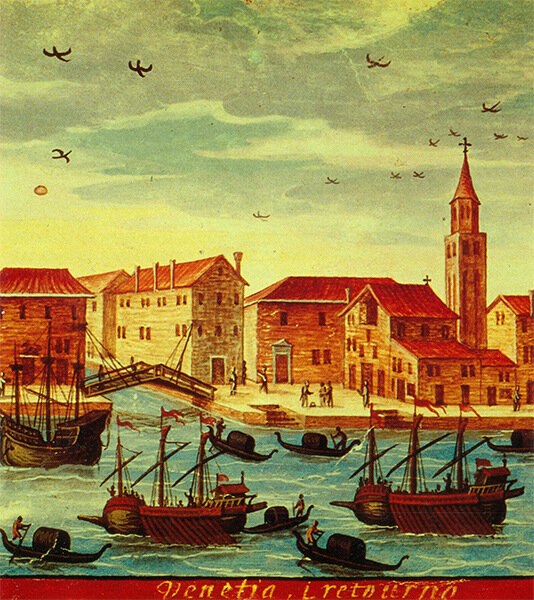
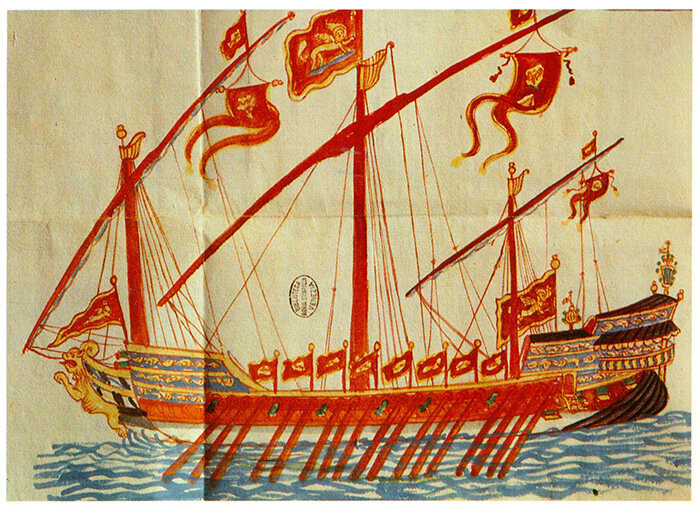

В середине XV века начались революционные изменения парусного вооружения «круглых» кораблей. Появились марсель, фок и бизань, которые кардинально повысили управляемость парусного судна. Хотя наличие весел давало еще преимущество галерам в безветренную погоду, парусные корабли уже не так сильно им уступали. К 1500 г., а более явственно к 1530 г. улучшенное парусное вооружение и новый такелаж «круглых кораблей» сделали их такими же пригодными для безопасных длительных переходов, как и галеры. Еще в 1493 г. Марино Сануто, описывая крушение двух галер типа «Фландрия» на скалах во время шторма, высказывал большое удивление тем, что находившемуся вместе с галерами паруснику " Zorzi" удалось избежать гибели.
Под давлением неизбежного развития событий Сенат Венеции к 1534 году отменил монополию галер на торговые перевозки и снял почти все ограничения, которые мешали конкурентной борьбе между «круглыми» и «длинными» судами. Остался только запрет парусникам, совершающим плавание вдоль северного побережья Африки на восток к Александрии и на запад до Испании, брать на борт мавританских купцов, перевозка которых давала основную долю доходов на этих маршрутах. В первой половине XVI века также и транспортировка паломников (единственные перевозки с использованием больших галер, которые находились в частных руках) полностью перешла к парусным судам.
Большая галера, прекратившая свое существование как купеческий и пассажирский транспорт, неожиданно получила развитие как военный корабль. То самое развитие артиллерии, которое сделало галеру беззащитной перед военными парусными кораблями, породило потребность в создании плавучих артиллерийских платформ. Около 1550 года венецианский конструктор Gian Andrea Badoer предложил перестроить палубу купеческой галеры, приспособив ее для ведения боя. До Лепанто оставался 21 год, срок достаточный, чтобы воплотить новые идеи в осязаемую конструкцию галеаса.
Еще одно конструктивное нововведение совпало по времени с созданием галеаса: переход от системы гребли, при которой на каждой банке находилось по два-три гребца, каждый из которых греб своим индивидуальным веслом, к системе, когда на той же банке сидели 3-4-5 и т.д. гребцов, управлявших одним общим для всех веслом. Первые такие весла, предназначенные для трех гребцов, были впервые посланы на галеры для испытаний в 1534 году. На купеческих галерах новая система была введена в 1551 году. Новая система гребли породила и новую проблему: как разместить на одной банке максимальное число гребцов, не увеличивая значительно ширину галеры. Мы уже знаем, что решение этой проблемы привело к увеличению числа гребцов на каждой банке до 8-9 человек.
Новая система гребли дала возможность увеличить скорость больших галер, однако все же они уступали по маневренности стандартным галерам. Этим можно объяснить неудачные попытки союза христианских государств в борьбе с османским флотом повторить успех Лепанто спустя год после битвы. Перемещение галеасов на позиции перед линией галер для нанесения артиллерийского удара по противнику, подобного тому, который разрушил боевые порядки турок в битве при Лепанто, привело лишь к потере времени и инициативы, которыми с успехом воспользовались турецкие флотоводцы. Впрочем, не увенчались успехом и попытки заменить галеасы парусными артиллерийскими кораблями: капризы ветра приводили порой к катастрофическим последствиям. Так что использование галеасов продолжалось, хотя и предпринимались меры по повышению их скорости и маневренности, чтобы успешно взаимодействовать в бою с легкими галерами.

Венецианский галеас конца XVII века
Уменьшение скорости галеасов было, в частности, связано, как мы уже указывали, с недостаточной длиной весел, точнее, их части от места приложения усилия гребца до уключины. На купеческих галерах, где весла играли вспомогательную роль, рама, на которой находились уключины – постица – была приближена к борту судна. Чтобы компенсировать этот конструкционный недостаток, была увеличена общая длина весла и на каждое было посажено по пять гребцов. Это нововведение привело к тому, что скорость галеасов к началу XVII века стала сопоставимой со скоростью стандартных галер, несмотря на то, что они несли до семидесяти орудий, в том числе и легкие орудия вдоль бортов, которые дали возможность производить бортовой залп приличной мощности.
Продолжим обсуждение вопросов, связанных с галеасами, в следующий раз.